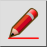
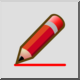
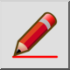
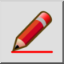

D ドラフトモード
ツールバー/アイコン:
 

メニュー: V ビュー > D ドラフトモード
ショートカット: D, F
コマンド: draftmode | df
ツールバー/アイコン:
 

メニュー: V ビュー > D ドラフトモード
ショートカット: D, F
コマンド: draftmode | df
現在の図面のドラフトモードを切り替えます。
ドラフトモードにおいて、ラインはすべて1つのピクセルの幅で示されます。
ハッチは表示されません。また、大規模なテキストが単純化されます。
図面が非常に大きくなり、それを描き直すのに長くかかる場合は、ドラフトモードを使用してください。